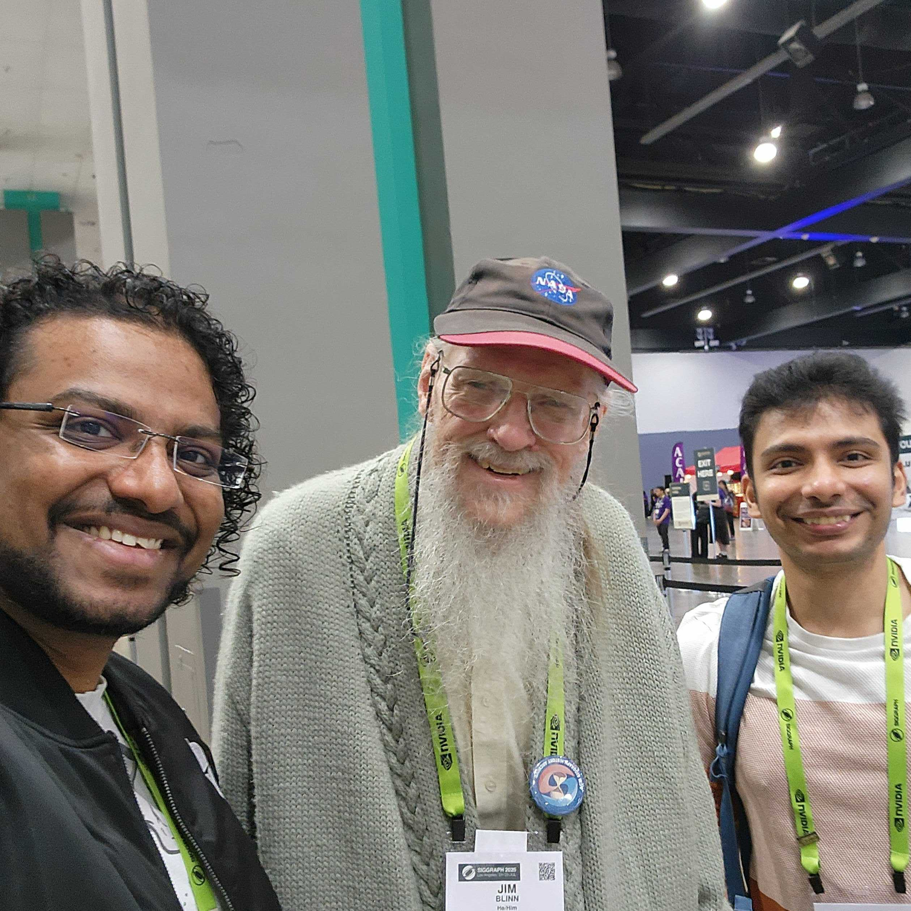

Visual Experience Lab
Assoc Prof Comp Sci NCSU
Visual technology that moves us —
how digital images affect emotion, thinking & behavior
News

Most of the lab made it to SIGGRAPH this year, where we made a presentation at the HPG conference, demoed our near-zero latency work at Emerging Technologies, and then made three presentations at the PRICE workshop. Of course, the real highlights were meeting Jim Blinn and Turner Whitted!

The lab played an important part in organizing the I3DG Symposium this year, with Prof. Watson Papers Co-Chair, and Arjun Madhusudan and Ashish Rajpurohit Publicity Co-Chairs. Prof. Watson also demoed the lab's near-zero latency work, while Arjun and Ashish both presented their esports research in the posters session. We also spent a lot of time posing with baby Yoda and the Mandalorian — I3D was at Lucasfilm!